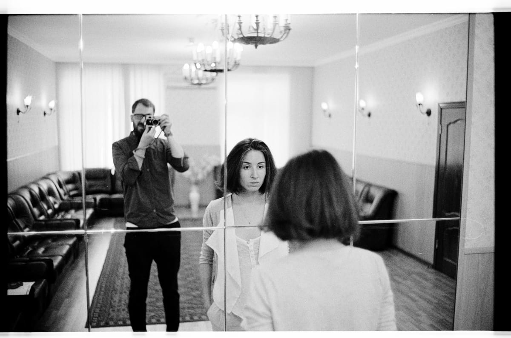

Тут внезапно выяснилось, что Flickr живее всех живых (и контент там неожиданно приятный), поэтому:
- мои картинки можно смотреть прямо там
- а еще в новом канальчике @pegovphotography
Пис!
Третий месяц ищем квартиру поближе к моей работе. И ничего толкового найти не можем, а когда находим, то очень часто оказывается, то это толковое уже кто-то снял до нас. Обидно.
Но самое обидное, что люди до сих пор сдают квартиры (и, видимо, их кто-то до сих пор снимает), в которых (помимо обоев в цветочек, советской мебели и ковров) установлена
СОВЕТСКАЯ
ЭЛЕКТРИЧЕСКАЯ
ПЛИТА.
Я и сам долго не разбирался в этих штуках, но с тех пор, как я научился готовить что-то сложнее яичницы, я понял — хорошая плита — это не половина, а, наверное, девяносто процентов дела, а вот это вот советское говно, с которым люди не стыдяться сдавать свои квартиры, у меня язык словом "плита" назвать не поворачивается.
И вот смотришь ты на такую милую (с хорошей мебелью, ламинатом, приятной ванной) квартирку, листаешь фоточки, представляешь как будешь в ней жить, и тут — БАЦ!!! — из темного дерева кухни вперед выдается советская электрическая плита.
Ну, и все. И все. И сразу все.

Хотел тут перечислить все, что со мной случилось, что я посмотрел, послушал, сделал (или не сделал) за последнее время, но вовремя спохватился.
А на фото — мой папа.


Снова в Бостоне (ну, не совсем, но рядом). Пока летел понял, что соскучился по штатам, а по Бостону особенно. Три года не был, считай. Классный город.
А на фото осень. Ну, не совсем в Бостоне. Но рядом.

Почему-то в московской больнице мы не ставили детям периферические катетеры. Если новорожденному был нужен антибиотик три раза в день, ему делали укол внутримышечно три раза в день. Сейчас для меня это просто дикость — зачем так мучить ребенка? Это больно, он маленький. Более того, если все-таки разрешалось поставить периферический катетер, мы вызывали реаниматолога. Сейчас я уже знаю, что это базовая, ерундовая манипуляция, которую в Израиле делают каждому ребенку сразу при поступлении, чтобы можно было легко и безболезненно взять анализ, ввести лекарство, ввести жидкость, если он обезвожен.
Интересное из статьи на Репаблике от педиатра, которая переехала в Израиль (можно пройти по ссылке и прочитать бесплатно, правда, кажется, придется зарегаться), и напомнила мне о том, что было много лет назад.
Я столкнулся с подобным, когда лежал в больнице с Егором в 2009 году — ему было 5 лет, и три раза в день ему кололи антибиотик в попу, а мне приходилось его держать, потому что он кричал, плакал и вырывался, и от напряжения весь покрывался сеткой от лопнувших каппиляров. Я ему не родной отец, и от этого ему наверное было еще ужаснее, хотя я и сам очень сильно переживал и не понимал зачем так издеваться над ребенком — зачем нужно врубать свет в 6 или 7 утра и со словами "готовим ребенка" и шприцом в одной руке, словно с пистолетом, вламываться в бокс — не понимал, и до сих пор не могу понять. На третий, кажется, день (не знаю, что там произошло и почему они вдруг до нас так снизошли) мне предложили поставить Егору катетер — такую маленькую херню, для которой нужно сделать один прокол и потом просто вставлять в нее шприц столько раз сколько необходимо. Да, это не избавляет от неприятных ощущений от введения лекарства или необходимости этот катетер раз в несколько дней менять — но блин, это же день и ночь по сравнению с уколами — этим совершенно диким издевательством и садизмом.
И зачем я про это снова вспомнил.

Такое странное ощущение, когда на телефоне нет инстаграма или твиттера... да и не только в телефоне, а и вообще — нет.

Я с утра сегодня зачем-то собрал диван. Сейчас пришел и думаю: ну вот зачем — знал ведь, что приду поздно и сразу лягу спать. А теперь пришел — и снова его разбирай. Повел себя как-то совершенно механически.
А на фото мужик спит, ничего не разбирая, прямо посреди Неаполя.